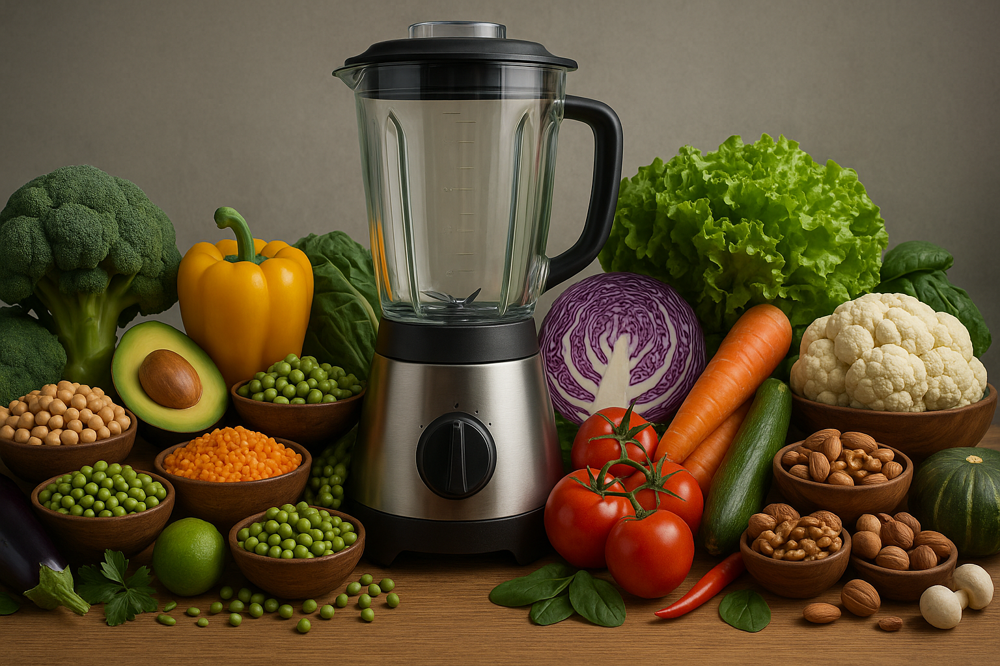

Recipes for Vegan Protein Smoothies
Chocolate Almond Espresso Shake
Ingredients: 240 ml unsweetened almond milk, 1 frozen
banana, 1 espresso shot (cooled), 2 tbsp almond butter, 1 scoop
Vega Sport Premium Protein
Directions: Blend everything on high for 45 seconds
until frothy. Adjust sweetness with 1–2 dates. Yields 32 g protein
and a mocha kick that doubles as breakfast.
Tropical Green Muscle Smoothie
Ingredients: 200 ml coconut water, 100 ml light coconut
milk, 1 cup frozen pineapple, ½ cup frozen mango, 1 packed cup baby
spinach, 1 tbsp chia seeds, 1 scoop
Orgain Organic Plant-Based Protein Powder
Directions: Layer liquids first then frozen fruit and
spinach. Blend 60 seconds. Chia thickens as it sits so drink within
10 minutes for best texture. Delivers 25 g protein and over 100 %
daily vitamin C.
Blueberry Oatmeal Power Bowl
Ingredients: ½ cup rolled oats, 150 ml oat milk, ½ cup
blueberries, 2 tsp maple syrup, 1 tsp ground flax, 1 scoop
Naked Pea Protein
Directions: Microwave oats and milk 90 seconds, stir in
protein while hot to dissolve clumps, top with berries, flax, and
syrup. Cooling for 2 minutes gives a creamy pudding vibe. 30 g
protein plus slow-burn carbs.
Peanut Butter Cookie Dough Bites
Ingredients: 1 cup creamy peanut butter, ¼ cup agave, 1¼ cups almond flour, ⅓ cup mini dark-chocolate chips, 1 scoop KOS Organic Plant Protein
Directions: Mix peanut butter and agave until smooth, fold in protein and flour, stir chips last. Roll 20 small balls, chill 20 minutes. Each bite weighs in at 4 g protein and no baking required.
Matcha Coconut Recovery Shake
Ingredients: 250 ml vanilla soy milk, 1 tsp ceremonial matcha, ½ frozen banana, 2 tbsp shredded coconut, 1 scoop Sunwarrior Warrior Blend
Directions: Whisk matcha with soy milk, add rest to blender, blitz until smooth. Coconut adds medium-chain fats for quick energy, total protein 22 g.
Strawberry Shortcake Overnight Oats
Ingredients: ½ cup oats, 150 ml almond milk, ½ cup diced strawberries, 2 tsp chia seeds, 1 tsp vanilla extract, 1 scoop Orgain Organic Plant-Based Protein Powder
Directions: Stir all ingredients in a jar, refrigerate 6 hours. In the morning stir again, add splash milk to loosen. Dessert for breakfast with 25 g protein and 7 g fiber.
Spiced Pumpkin Smoothie
Ingredients: 200 ml unsweetened cashew milk, ½ cup pumpkin purée, 1 frozen banana, ½ tsp pumpkin-pie spice, 1 tbsp pecan butter, 1 scoop Truvani Plant-Based Protein Powder
Directions: Blend 45 seconds until silky. Pumpkin adds vitamin A while pecan butter supplies healthy fats. 23 g protein and autumn flavor year-round.
Cherry Vanilla Recovery Pops
Ingredients: 1½ cups frozen dark cherries thawed, 240 ml vanilla coconut yogurt, 1 tsp lemon juice, 1 scoop Vega Sport Premium Protein
Directions: Purée all ingredients, pour into six ice-pop molds, freeze 4 hours. Each pop packs 5 g protein and anthocyanins to fight muscle soreness.
Savory Spinach Protein Soup
Ingredients: 300 ml low-sodium vegetable broth hot, 1 cup fresh spinach, ½ avocado, 1 tbsp nutritional yeast, pinch sea salt, 1 scoop unflavored Naked Pea Protein
Directions: Blend avocado, spinach, yeast, and broth until creamy, then pulse in protein. Serve immediately. Warm savory option with 28 g protein for soup lovers.
Mocha Chia Pudding
Ingredients: 1 cup oat milk, 1 tsp instant espresso, 3 tbsp chia seeds, 1 tbsp cacao powder, 1 tbsp maple syrup, 1 scoop KOS Organic Plant Protein
Directions: Whisk milk, espresso, cacao, syrup, and protein until smooth, stir in chia, refrigerate 3 hours. Thick spoonable dessert delivering 24 g protein and slow-digesting fiber.
Piña Colada Post-Workout Shake
Ingredients: 250 ml coconut water, ½ cup frozen pineapple, 2 tbsp unsweetened shredded coconut, 1 tbsp lime juice, 1 scoop Sunwarrior Warrior Blend
Directions: Blend 60 seconds. Electrolytes from coconut water plus 18 g protein restore after sweaty sessions.
Chocolate Hazelnut Thickshake
Ingredients: 200 ml hazelnut milk, 1 frozen banana, 1 tbsp cocoa, 2 tbsp hazelnut butter, 1 scoop Truvani Plant-Based Protein Powder
Directions: Blend until almost soft-serve thick, eat with spoon. Delivers 26 g protein and Nutella vibes without the sugar crash.
Berry Beet Power Smoothie
Ingredients: 240 ml almond milk, ½ cup frozen raspberries, ½ cup frozen blueberries, ½ small cooked beet, 1 tbsp hemp seeds, 1 scoop Orgain Organic Plant-Based Protein Powder
Directions: Blend high 60 seconds. Beet nitrates boost blood flow, total protein hits 24 g.
Cookie-Crust Protein Parfait
Ingredients: ½ cup crushed oat cookies, 150 g coconut yogurt, 1 tbsp almond butter, 1 scoop Naked Pea Protein mixed into yogurt, ¼ cup mixed berries
Directions: Layer cookie crumbs yogurt mix berries repeat. Chill 20 minutes for flavors to meld. Dessert glass with 30 g protein and satisfying crunch.
Caramel Macchiato Iced Shake
Ingredients: 180 ml chilled coffee, 120 ml cashew milk, 1 tsp date syrup, ¼ tsp sea-salt flakes, 1 scoop Vega Sport Premium Protein
Directions: Shake all ingredients with ice for 30 seconds. Salt tames bitterness and makes flavors pop. 30 g protein plus cafe-style indulgence at home.
Rotate these fifteen recipes to keep flavors fresh while each serving supplies at least 18 g plant protein, balanced carbs and healthy fats so your blender never knows boredom.